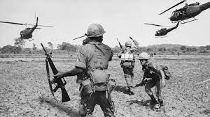

Impact of the Acts: Instead of suppressing pro-French sentiment, the Acts backfired on the Federalists. They alienated swing voters, leading to Thomas Jefferson's victory in the 1800 presidential election.Although the French Revolution had ended its radical phase, Federalists in the United States remained wary of revolutionary ideology infiltrating the United States. Many French citizens, refugees from the French and Haitian revolutions, had settled in American cities and remained politically active, setting up newspapers and agitating for their political causes. A French spy, Victor Collot, traveled through the United States in 1796, noting the weaknesses in its western border. When a breakdown in diplomatic negotiations resulted in the Quasi-War with France, the Federalist-controlled Congress passed a series of laws known as the Alien and Sedition Acts, intended to curb political dissent and limit the political participation of immigrants by easing deportation and lengthening the time required for citizenship. A number of political radicals were arrested for sedition, including Congressman Matthew Lyon and newspaper editors James Thompson Callendar and William Duane. Many refugees, sensing American hostility, chose to return to France and Haiti since the political situation had temporarily calmed in both places. Jefferson's Approach: Jefferson distanced himself from political radicals and appealed to political moderates, despite Federalist warnings that his election would bring revolution to the U.S.

United States involvement in the Vietnam War began shortly after the end of World War II in Asia, first in an extremely limited capacity and escalating over a period of 20 years. The U.S. military presence peaked in April 1969, with 543,000 American combat troops stationed in Vietnam.[1] By the conclusion of the United States's involvement in 1973, over 3.1 million Americans had been stationed in Vietnam.